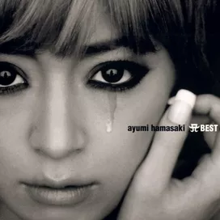

At fifteen years of age, I was in a musical slump. There was no one out musically that held my interest. One day my friend introduced me to Japanese pop artists, and nothing has been the same since

Ayumi Hamasaki was the first Japanese artist that I fell in love with. Her album My Story changed my life. About You, My Name's WOMAN, and Liar were a few of the songs that I enjoyed

I became aware of Utada Hikaru thanks to the videogame Kingdom Hearts. It was after that that I became aware of her other songs like Tokyo Nights, Wait and See, and Can You Keep a Secret. I also learned that not only was she well known in Japan, but she was originally from New York City

More music would only come as the months went on, especially because I discovered YouTube, and with it the talented Crystal Kay. She is of African-American and Korean descent, but was born and raised in Yokohama. Her first single came out when she was thirteen and was titled Eternal Dreams. Since then she has made a huge impact on J-pop and J-r&b. She is also a huge inspiration for other mixed raced artists who perform in Japan
This is merely a small list of the artists who I enjoy on a daily basis.